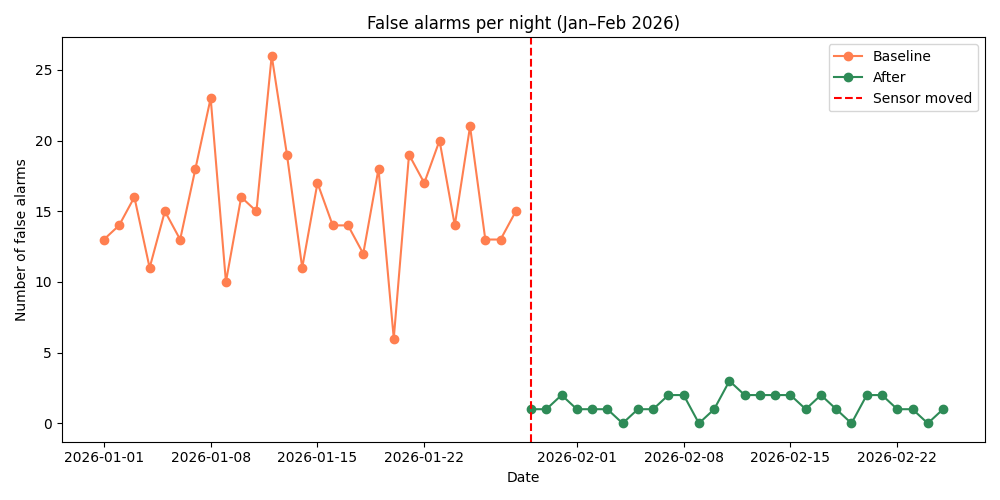
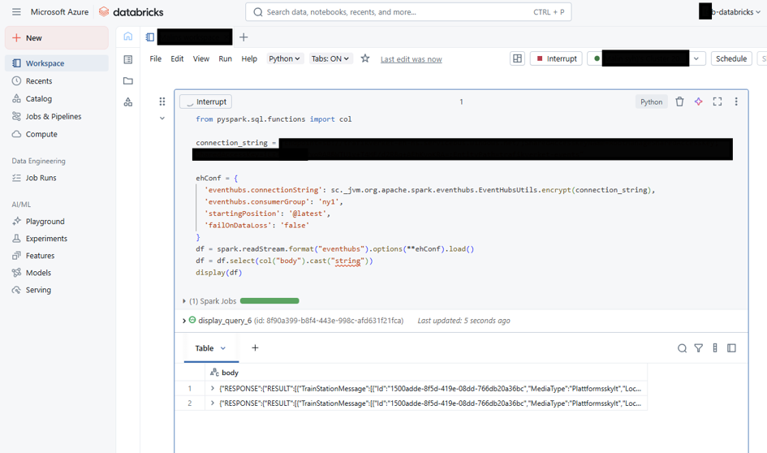
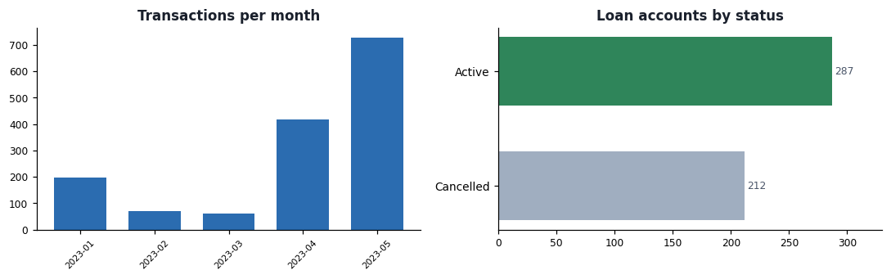

Alarm Analysis
A BI analysis of false alarms in elderly care. The result: roughly 92% fewer disruptive alarms — and a clear explanation of what saves both time and worry for staff.
View projectBusiness intelligence, data analysis, SQL & data modeling, Power BI, machine learning and agentic AI
I like untangling messy data, finding patterns and explaining what the numbers actually mean — and I believe in working smarter, not harder: automate the boring parts, save the thinking for the interesting problems. Here's a selection of projects from my studies and my own experiments.

A BI analysis of false alarms in elderly care. The result: roughly 92% fewer disruptive alarms — and a clear explanation of what saves both time and worry for staff.
View project
A hybrid LLM pipeline with a CRM analytics layer on top: deterministic Python computes everything — star schema, RFM segmentation, churn risk, next-best-action — while the LLM writes the narrative and answers plain-English questions via tool calls.
View project
Regression, trees, k-means by hand, PCA and SVM across four datasets — but the real lesson was the metrics: train R² 0.94 vs test R² −25 on ten rows. Dataset size constrains what a model can prove more than algorithm choice does.
View project
The streaming side of Azure: live Trafikverket train events consumed the moment they arrive — Event Hub → Databricks (PySpark structured streaming) → Azure SQL. Consumer groups, starting positions and data-loss handling included.
View project
The batch side of Azure: classic scheduled ETL — CSV in Blob Storage → Data Factory pipeline → Azure SQL landing tables. Schema design, security setup and encoding troubleshooting for Swedish characters.
View project
A full pipeline from raw banking CSVs through Python cleaning and a star schema to a finished Power BI report — plus the same flow as an SSIS package.
View project
A bank where the business rules live in the database itself: no loan without a credit check, and the monthly payment job is idempotent — run it a hundred times and every payment still posts exactly once.
View projectI graduated as a Business Intelligence Analyst from Nackademin in May 2026, and I'm looking for roles where I get to make data understandable — whether that means wrangling data with SQL or Python, building something an LLM can reason over, or just staring at numbers until they make sense.
I'm at my best connecting the tech to real-world value: what does this number actually mean, and what should we do about it?
Questions, opportunities or just a coffee? Reach out via LinkedIn or email.